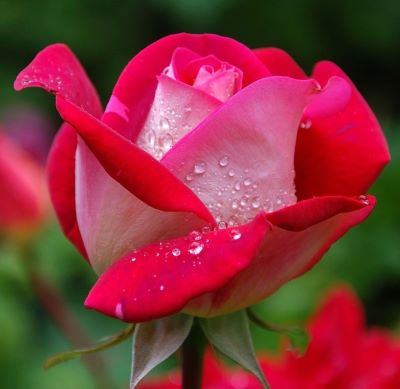
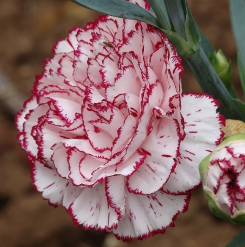
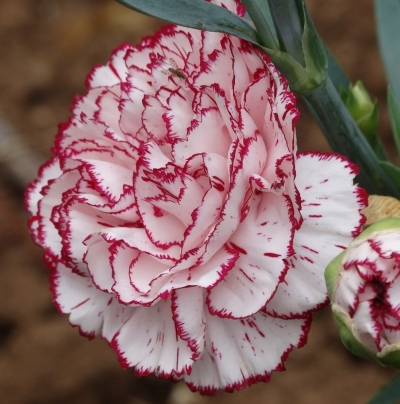

Picture of a Rose - Symbol of Love
Image by Jörg Möller from Pixabay
Picture of a Sunflower - Follower of the Sun
Image by dewdrop157 from Pixabay
Picture of a Cherry Blossom - Symbol of Renewal
Image bycongerdesign from Pixabay
Picture of a Tulip - The Spring Bloom
Image by Couleur from Pixabay
 Picture of an Orchid - Exotic Elegance
Image by JackieLou DL from Pixabay
Picture of Lavender - Fragrant Beauty
Image by Hans from Pixabay

Picture of a Carnation - Fascination and Distinction
Image by dennel1910 from Pixabay
Picture of a Marigold - The Festival Flower
Image by Mirosław i Joanna Bucholc from Pixabay
Picture of a Daisy - Symbol of Innocence
Image by 👀 Mabel Amber, who will one day from Pixabay
Picture of a Peony - Elegance and Richness
Image by qingwuming from Pixabay
Picture of a Lotus - Sacred Symbol
Image by Trung Nguyễn from Pixabay
Picture of a Hibiscus - Tropical Beauty
Image by Iris Hamelmann from Pixabay
Picture of a Bluebell - Symbol of Humility
Image by armennano from Pixabay
Picture of a Zinnia - Endurance and Strength
Image by Jürgen from Pixabay
Picture of an Iris - Symbol of Wisdom
Image by AlbertoGuillen from Pixabay
Picture of a Jasmine - Sweet Fragrance and Beauty
Image by Ralph from Pixabay
Picture of an Orchid - Exotic Elegance
Image by JackieLou DL from Pixabay
Picture of Lavender - Fragrant Beauty
Image by Hans from Pixabay

Picture of a Carnation - Fascination and Distinction
Image by dennel1910 from Pixabay
Picture of a Marigold - The Festival Flower
Image by Mirosław i Joanna Bucholc from Pixabay
Picture of a Daisy - Symbol of Innocence
Image by 👀 Mabel Amber, who will one day from Pixabay
Picture of a Peony - Elegance and Richness
Image by qingwuming from Pixabay
Picture of a Lotus - Sacred Symbol
Image by Trung Nguyễn from Pixabay
Picture of a Hibiscus - Tropical Beauty
Image by Iris Hamelmann from Pixabay
Picture of a Bluebell - Symbol of Humility
Image by armennano from Pixabay
Picture of a Zinnia - Endurance and Strength
Image by Jürgen from Pixabay
Picture of an Iris - Symbol of Wisdom
Image by AlbertoGuillen from Pixabay
Picture of a Jasmine - Sweet Fragrance and Beauty
Image by Ralph from Pixabay